Highlighted work
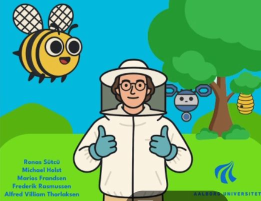
Bee a Hero
Final Bachelors project.
Bee a Hero
Bee a Hero is a transformative game, about the real-life struggles of bees.
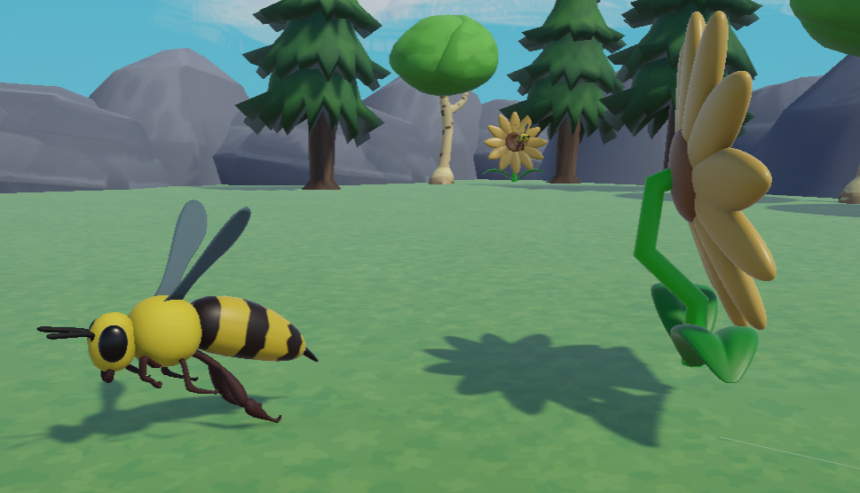
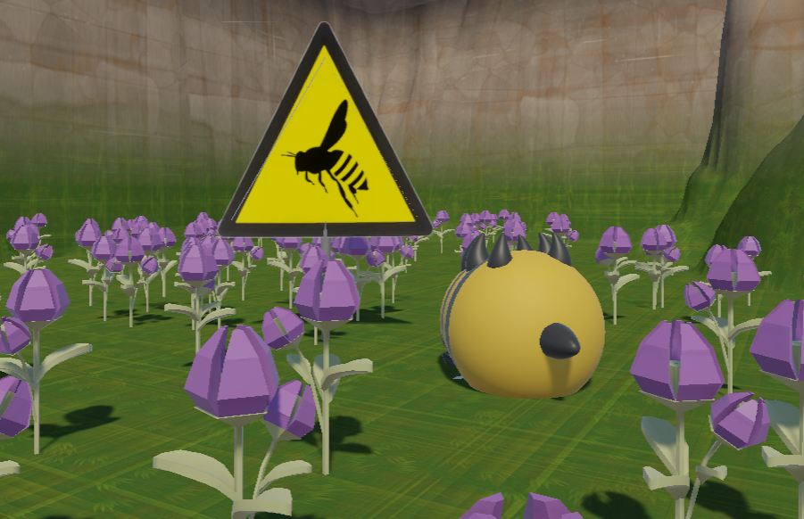
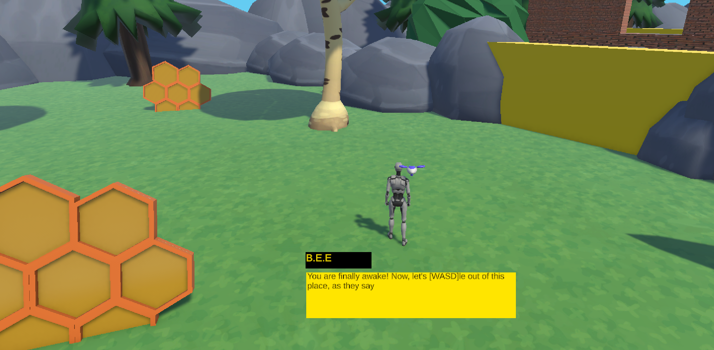
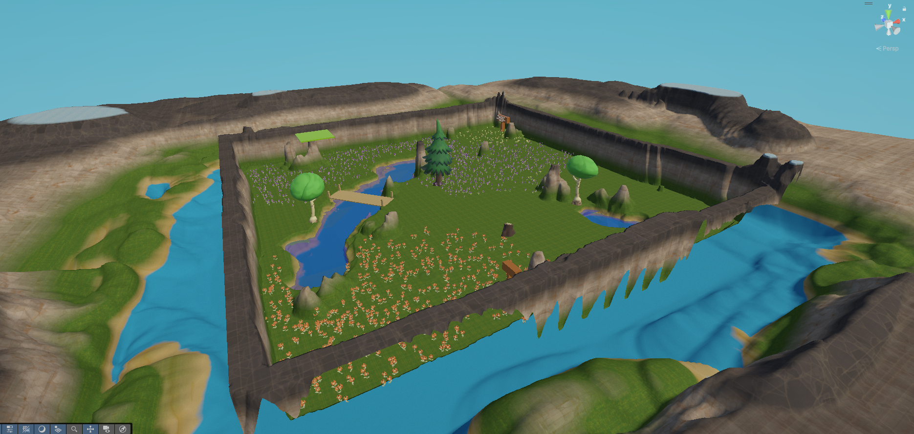
During our bachelor project, we developed "Bee a Hero," a game that immerses players in the real-life struggles of bees. Through engaging gameplay and compelling storytelling, we aimed to raise awareness about the critical role bees play in our ecosystem and the challenges they face. The project combined elements of education and entertainment to create a meaningful experience for players, highlighting the importance of conservation efforts for these vital pollinators.
My Role
In this project, i worked on VFX and procedural generated enviroments in Unity, as well as other elements such as UI/UX and user testing. I also contributed to the development of the game mechanics and overall design, ensuring a cohesive and engaging player experience. During this project, we interviewed a professional beekeeper, implementing real-life insights into our game design to create an authentic and impactful experience.
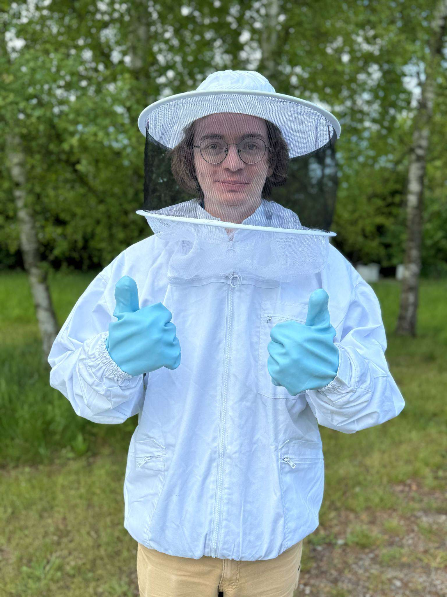

.png)
Relived
Semester 7 project.
Relived
Relived is a Story-based dancing experience that explores the use of Real-Time motion capture technology in game development.
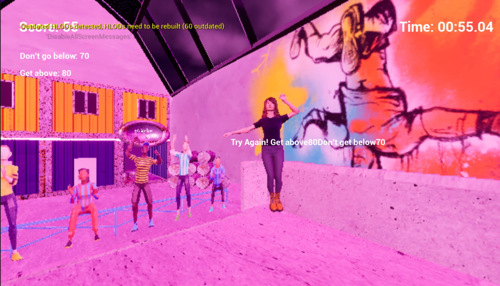
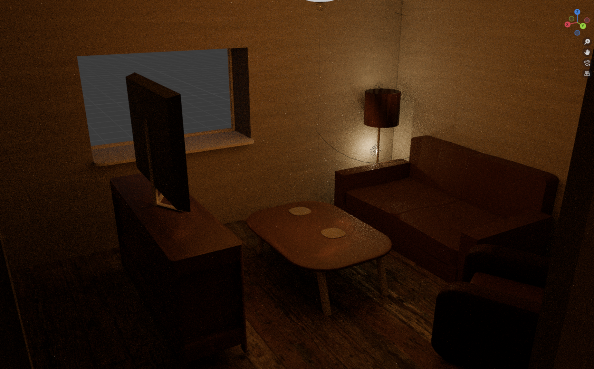
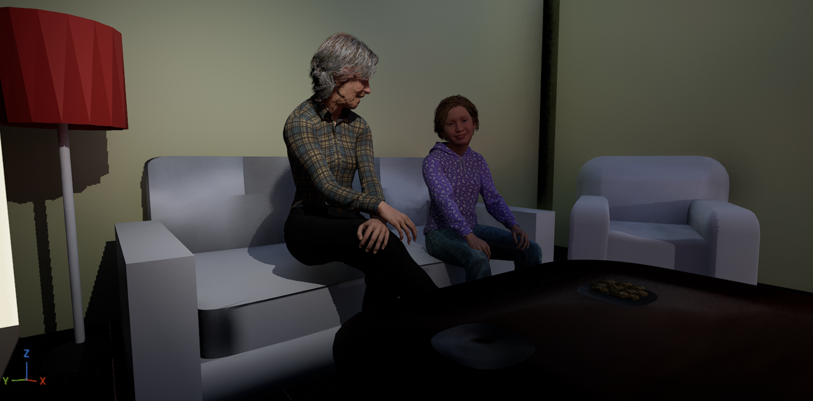
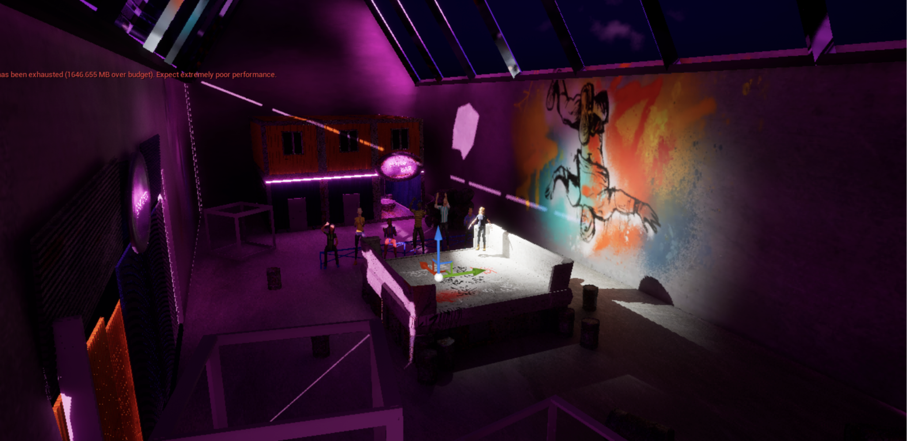
During our 7th semester project, we developed "Relived," a story-based dancing experience that explores the use of real-time motion capture technology in game development. The project aimed to create an immersive and interactive experience that combines storytelling with dance, allowing players to engage with the narrative through movement. By leveraging motion capture technology, we were able to capture and translate real-life dance movements into the game, creating a unique and dynamic gameplay experience that blurs the lines between player and performer.
My Role
In this project, I worked on the development of the real-time motion capture system using python integrations in unreal engine, as well as model rigging and animation. I also contributed to the overall design and implementation of the game mechanics, ensuring a seamless integration of the motion capture technology into the gameplay experience. Additionally, I was involved in user testing and feedback analysis to refine the game's mechanics and enhance player engagement throughout the development process.
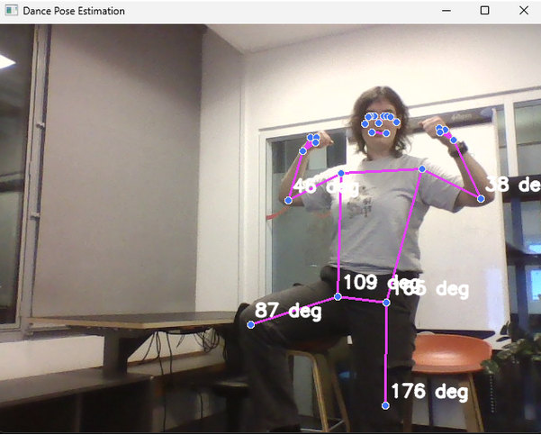
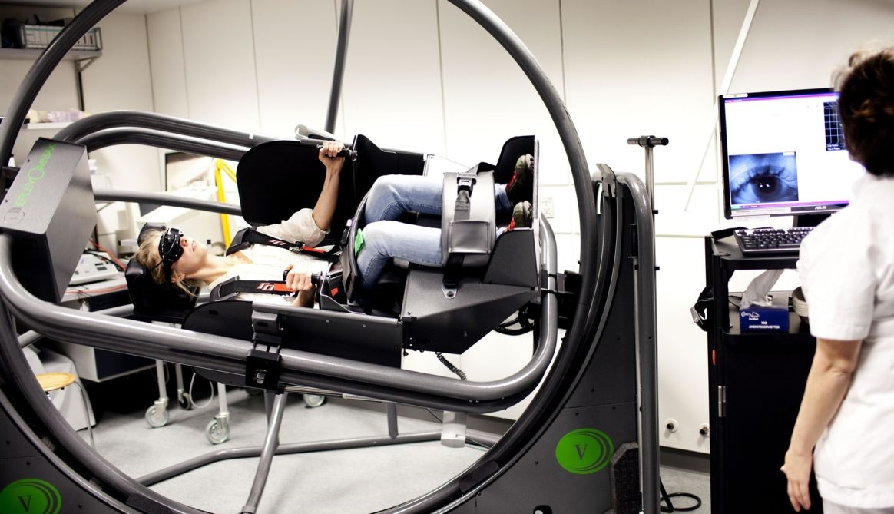
Visually-Induced Motion Sickness
Semester 5 Project.
Visually-Induced Motion Sickness
This project aimed to create a standardized test for visually-induced motion sickness in a VR environment.
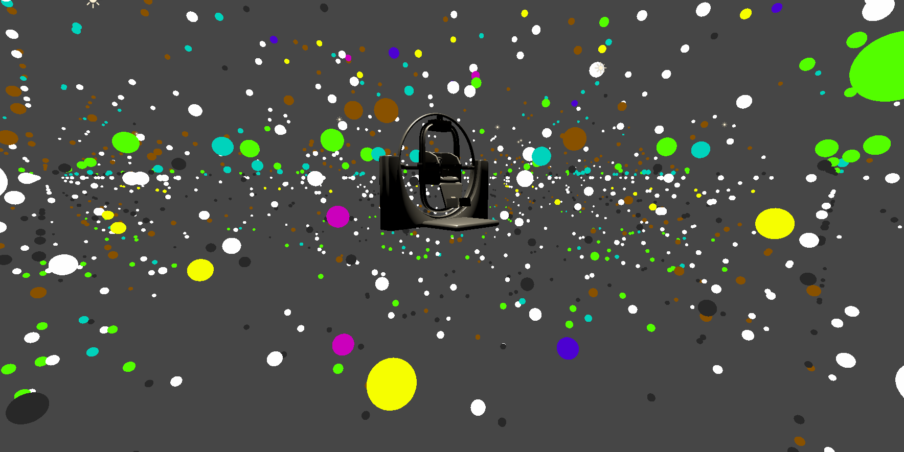
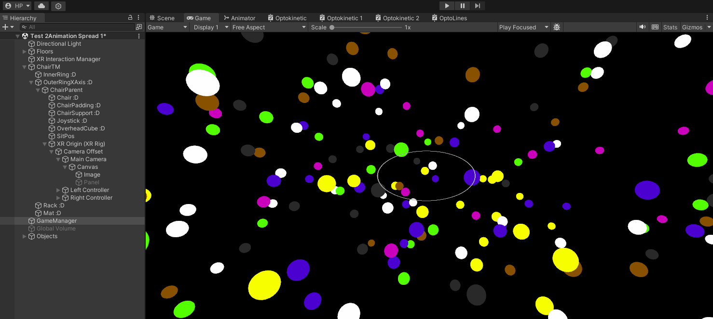

During our 5th semester project, we colaborated with the Copenhagen Hearing and Balance Centre and developed a standardized test for visually-induced motion sickness in a VR environment. The project aimed to create a reliable and consistent method for inducing motion sickness in a controlled setting, allowing for the study and comparison of Visually-Induced Motion Sickness (VIMS) and Physically-Induced Motion Sickness (PIMS). By utilizing a VR environment, we were able to simulate various visual stimuli and conditions that can trigger motion sickness, providing valuable insights into the factors that contribute to VIMS and PIMS. The standardized test we developed can be used for future research and testing in the field of motion sickness, helping to improve our understanding of this phenomenon and develop effective mitigation strategies.
My Role
In this project, i worked on sound design and testing, creating an immersive audio experience that complemented the visual stimuli in the VR environment. I also contributed to the development of the standardized test protocol, ensuring that it effectively induced motion sickness while maintaining a controlled and consistent testing environment. Additionally, I was involved in data analysis and interpretation, helping to draw meaningful conclusions from the results of our experiments and contributing to the overall success of the project.
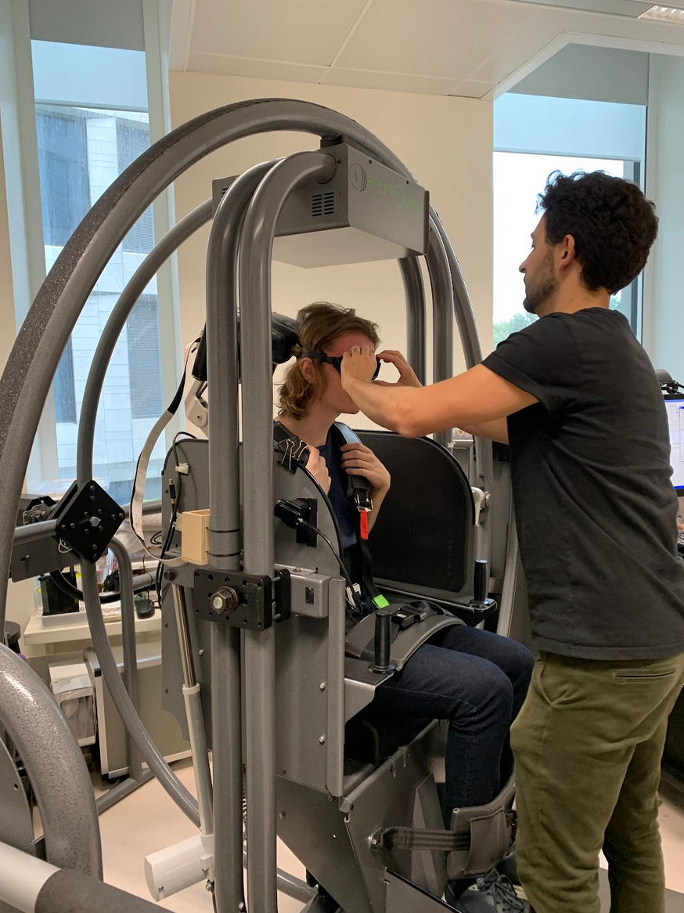
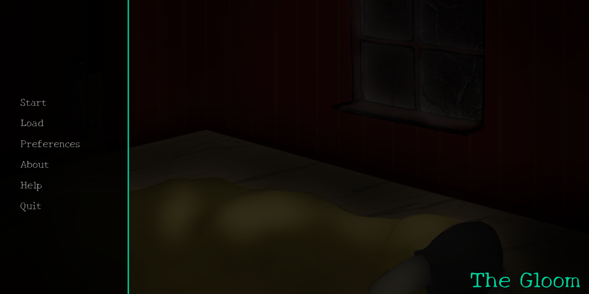
Visual Novel Game
A psychological horror visual novel centered on themes of grief and loss, developed in Python using the Ren'Py engine.
The Gloom
Over a three-month project, we developed a Visual Novel centered on themes of grief and loss. By prioritizing atmospheric sound, text, and visual dynamics over spoken dialogue, we created an open space for interpretation. The result is a powerful, personal experience that allows players to mirror their own emotions directly within the narrative.

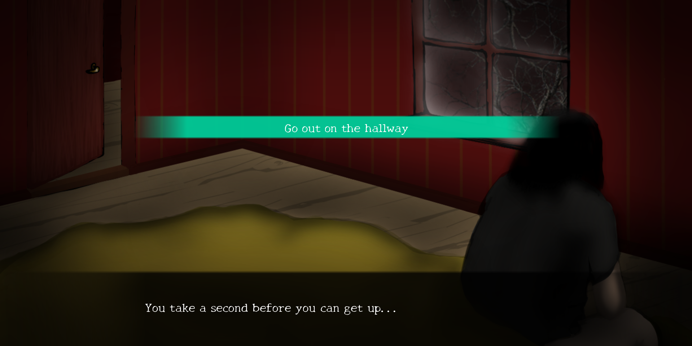